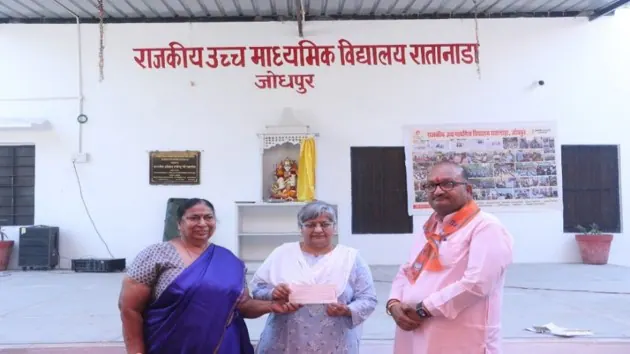
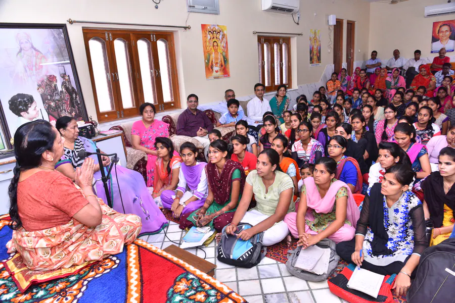

१
स्वामी विवेकानन्द स्टूडेन्ट्स वेलफेयर चैरिटेबल ट्रस्ट
विद्यालयी बालिका शिक्षा और संस्कार का आधार
10 जून 1996 को स्थापित इस ट्रस्ट ने दूरदर्शी योजना की पहली नींव रखी: बालिका को शिक्षित करो, संस्कारित करो और उसके आत्मविश्वास को जगाओ।

विद्यालयी छात्रवृत्ति
आर्थिक कठिनाइयों के कारण शिक्षा से वंचित बालिकाओं को पढ़ाई जारी रखने का आधार।

संस्कार और आत्मविश्वास
शिक्षा को चरित्र, नैतिक मूल्यों और सकारात्मक जीवन-दृष्टि से जोड़ना।